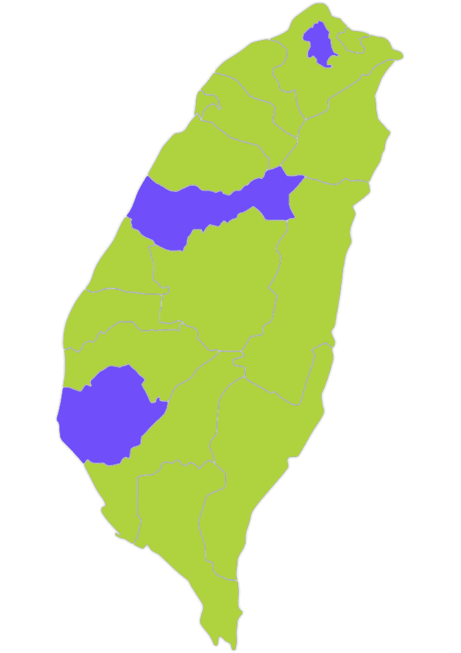
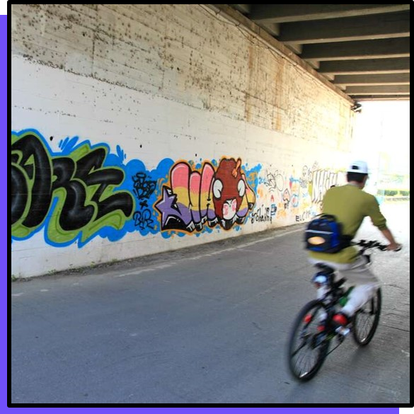
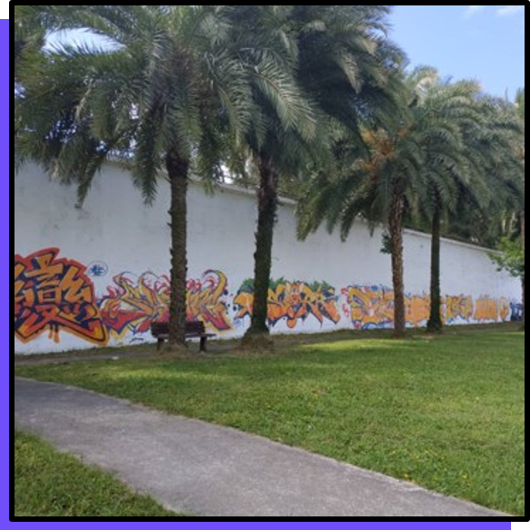

塗鴉人手札
合法區抵家
塗鴉知多少
線上塗鴉展
合法區
抵家
想要練習塗鴉又
不想收罰單
？有
滿到爆的創意
卻不知到哪發揮？
那你
來對地方了
，去找吧！我們把全台的
塗鴉合法區
都藏在這裡！
台中市
塗鴉示範區
中科路橋（廣福路橋）橋墩
大里區環中東路五段
台南市
合法塗鴉區
東區四維路地下道
合法塗鴉區
中華北路二段堤岸邊
（文賢路至北安路段區間
南區體育公園旁
青少年極限運動場

台北市
河濱公園
松山區迎風河濱公園
松山區觀山河濱公園
中山區美堤河濱公園
南港區成美左岸河濱公園
文山區福和河濱公園
文山區景美河濱公園
內湖區成美右岸河濱公園
台北市松山區迎風河濱公園
位於基隆河7號疏散門進入往基隆河上游約500公尺處，面積：約1,310平方公尺
點我看地圖
台北市松山區觀山河濱公園
位於基隆河5號疏散門進入往基隆河下游約20公尺處，面積：約1,450平方公尺
點我看地圖
中山區美堤河濱公園
位於明水路越堤坡道進入右側方，美堤天空咖啡及美堤自行車租借站之間，面積：約780平方公尺
點我看地圖
台北市南港區成美左岸河濱公園
位於基3號疏散門進入往成功橋方向，面積：約2,120平方公尺
點我看地圖
文山區福和河濱公園
位於由景美2號疏散門進入，面積：約360平方公尺
點我看地圖

文山區景美河濱公園
位於北新橋下(鳴遠橋)涵洞牆面，面積：約200平方公尺
點我看地圖

內湖區成美右岸河濱公園
位於基13號疏散門進入往成功橋方向，面積：約1,410平方公尺
點我看地圖
台中市中科路橋塗鴉示範區
位於台中市中科路橋（廣福路橋）橋墩
點我看地圖
台中市大里塗鴉示範區
位於台中市大里區環中東路五段池王宮對面約200公尺長之防洪牆
點我看地圖
台南市四維路地下道合法塗鴉區
位於台南市東區四維路地下道（單側）
點我看地圖
台南市中華北路塗鴉合法區
位於台南市北區中華北路二段堤岸邊（文賢路至北安路段區間）
點我看地圖
台南市極限運動場塗鴉合法區
位於台南市南區體育路10號體育公園旁
點我看地圖